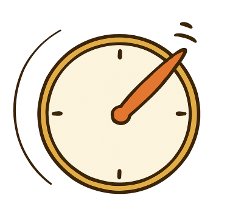

01wk-1: 확률을 정의하는 것은 쉬운 일인가?
강의영상
예제1: 동전던지기
공평한 동전이 있다고 상상하자. 이 동전을 던져서 앞면이 나오는지 뒷면이 나오는지 조사한다고 하자.
- \(\Omega =\{H,T\}\): sample space
- \(P(\{H\})=P(\{T\})=\frac{1}{2}\): prob

질문1
\(\Omega\)의 임의의(=모든) 부분 집합 \(\Omega^*\)에 대하여 \(P(\Omega^*)\)를 모순없이 정의할 수 있을까?
(답변)
- \(\Omega\)의 부분집합: \(\emptyset, \Omega, \{H\},\{T\}\)
- \(P(\{H\})=\frac{1}{2}\), \(P(\{T\})=\frac{1}{2}\), \(P(\Omega)=P(\{H,T\})=1\), \(P(\emptyset)=0\)
된거아니야?
모순없이의 의미?
- 우리가 상식적으로 확률이라고 하면 떠오르는 어떠한 성질이 있음 (확률의 공리 + 기본성질) // 네이버검색
- 이러한 성질이 상식적인 수준에서 납득이 가야함
상식1
- 확률은 0과 1사이에 있어야함.
- 임의의 \(\Omega^* \subset \Omega\) 에 대하여 이 상식은 잘 적용됨.
- \(P(\{H\})=\frac{1}{2}\)
- \(P(\{T\})=\frac{1}{2}\)
- \(P(\Omega)=P(\{H,T\})=1\)
- \(P(\emptyset)=0\)
상식2
상식적으로 작은집합이 일어날 확률은 큰 집합이 일어날 확률보다 클 수 없음. 예를들며 집합 \(\{H\}\)은 집합 \(\Omega\)보다 작은 집합임. 따라서 \(P(\{H\}) \leq P(\Omega)\) 이 성립해야함. (성립하죠?)
동전 예제의 경우 모든 \(A,B \subset \Omega\) 에 대하여 \[A\subset B\] 이라면 \(P(A) \leq P(B)\) 가 성립해야함.
상식3
- 우리의 상식에 따르면 \(A,B\)가 서로소인 사건이라면 \[P(A \cup B)=P(A)+P(B)\] 이어야 함. (확률의 공리)
- 예를들어 앞면이 일어날 사건 \(\{H\}\)와 뒷면이 일어날 사건 \(\{T\}\)는 서로소이므로 아래가 성립해야함.
\[P(\{H\} \cup \{T\})=P(\{H\}) + P(\{T\})\]
상식4
- 우리의 상식에 따르면 앞면이 일어날 사건은 뒷면이 일어나지 않을 사건과 같아야함.
상식5
- 우리의 상식에 따르면…
상식6
- 우리의 상식에 따르면…
예제2: 바늘이 하나만 있는 시계
바늘이 하나 있는 시계가 있다고 하자. 이 시계의 바늘을 돌려서 멈추는 지점을 조사한다고 하자.
- 시계바늘을 돌려서 멈추는 지점을 조사하는 일 \(\Leftrightarrow\) \([0,2\pi)\)사이의 숫자중에 하나를 뽑는 일
- \(\Omega = [0,2\pi)\)

질문1
바늘을 랜덤으로 돌렸을때 12시-6시 사이에 바늘이 있을 확률?
(답변)
당연히 \(\frac{1}{2}\)이죠.
(계산수식??)
???
아래와 같이 계산하면 가능!!
\[\forall \Omega^* \subset \Omega, \quad P(\Omega^*)=\frac{1}{2\pi} \times m(\Omega^*)\]
단 여기에서 \(m\)은 구간의 길이를 재는 함수라고 하자.
연습: \(m\)의 사용
- \(m(\Omega)=m([0,2\pi))=2\pi\)
- \(m(\Omega^*) = m([0,\pi))= \pi\)
그렇다면 아래와 방식으로 확률을 정의하면 잘 정의될까?
\[\forall \Omega^* \subset \Omega, \quad P(\Omega^*)=\frac{m(\Omega^*)}{2\pi}\]
- “잘 정의되지 않을 건 또 뭔가?” 싶겠지만 간단한 문제가 아님
- 왜냐하면 확률이 잘 정의된다는 말은 “\(\Omega\)의 모든 부분집합 \(\Omega^*\)에 대하여 \(P(\Omega^*)\)이 모순없이” 정의된다는 의미인데 이것이 쉬운일이 아님. \(\to\) 아닌데? 쉬울 것 같은데? \(\to\) 해보자!!
우리의 목표: 표본공간 \(\Omega\)의 임의의 부분집합 \(\Omega^*\)에 대하여
\[P(\Omega^*)=\frac{m(\Omega^*)}{2\pi}\]
와 같은 방식으로 확률을 재었을 때, 그 누구라도 아무런 의문을 제기하지 않고 “그렇구나-” 라고 납득할 수 있어야함.
질문1
\(\Omega^*=\emptyset\) 일 확률이 얼마인가?
(답변)
- 정답은 0 입니다.1
질문2
\(\Omega^* =\{0\}\)일 확률이 얼마인가?
(답변)
- 즉 바늘침이 정확하게 12시를 가르킬 확률이 얼마냐는 것
- 짜증난다고 질문을 피할 수 없다.. (왜? 한 점으로 이루어진 집합 \(\{0\}\)은 분명히 \(\Omega=[0,2\pi)\)의 부분집합 이므로 앞서 논의한대로라면 이러한 집합에 대한 확률을 누구나 납득가능하게, 명확하게, 모순없이 정의할 수 있어야 함)
- 이 확률은 0일까? 아니면 0에 가까운 수일까?
- 많은 사람들이 이 질문에 대한 답은 \(0\) 이라고 알고 있고 그 이유를 “점의 길이는 0 이니까” 라고 이해하고 있음.2
- 답변이 사실 좀 찝찝한 기분이 든다. 바늘침이 정확하게 12시를 가르키는 것은 우리가 분명 하루에 한번씩은 경험하는 사건이다. 그런데 그 사건이 일어날 확률은 0이다?
이쯤에서 중간정리를 해보자. 눈치챘겠지만, 이 예제에 한정하여
- 확률을 재는 것 = 길이를 재는 것
이다. 이 예제에서 \(P(\Omega^*)\)를 구하는것은 단순히 \(\Omega^*\)의 길이를 구한뒤 \(\frac{1}{2\pi}\)로 스케일링 한 것 뿐이기 때문이다.
(질문?) 생각해보니까 이런게 있었잖아?
\[A \subsetneq B \Rightarrow P(A)<P(B)\]
그런데 \(\emptyset \subsetneq \{0\}\) 인데 \(P(\emptyset)=P(\{0\})\) 이다..? 좀 이상하지 않어?
(답변)
- 질문이 잘못되었음. \(A \subsetneq B \Rightarrow P(A) < P(B)\) 는 성립하지 않음.
- 즉 \(A\)가 \(B\)의 진 부분집합이더라도 \(P(A)=P(B)\)인 경우가 존재함.
질문3
그렇다면 사건 \(\{0,\pi\}\)가 일어날 확률은 얼마인가?
(답변)
- 질문을 다시 풀어쓰면 바늘침이 정확하게 12시를 가르키거나 혹은 정확하게 6시를 가르킬 확률이 얼마냐는 것
- 따라서 이 질문에 대한 대답은 \(0+0=0\) 이므로 \(0\)이라고 주장할 수 있음.
질문4
구간 \([0,2\pi)\)는 무수히 많은 점들이 모여서 만들어지는 집합이다. 그런데 점 하나의 길이는 0이다. 0을 무수히 더해도 0이다. 그러므로 구간 \([0,2\pi)\)의 길이도 0이 되어야 한다. 이것은 모순아닌가?
(답변)
- 까다롭다…..
- 그렇지만 이 질문도 피할 수 없음.
- \(m([0,2\pi))=0\) 임을 인정하면 전체확률은 1이어야 한다는 기본상식3에 어긋나 모순이 생김.
- 질문의 논리는 타당해보임. 이 논리의 약점은 딱히 없어보임. 굳이 약점이 있다면 “무한”이라는 개념?
- 어쩔수없이 직관에 근거한 약간의 약속을 또 다시 해야할 것 같음. 예를들면 “점들을 유한번 합치면 그냥 많은 점들이지만 무한히 합치면 이것은 선분이 된다. 따라서 길이가 생긴다.” 와 같이.
- 우리는 이 약속을 “무한번의 기적”이라고 칭하자.
질문5
\([0,\pi)\) 에서 유리수만 뽑아낸 집합이 있다고 생각하자. 편의상 이 집합을 \(Q\) 라고 하자. 이 집합은 분명히 무한개의 점을 포함하고 있다. 그렇다면 이 집합도 길이가 있는가? 있다면 얼마인가?
(답변)
- 이미 점들의 길이를 무한번 더하면 길이가 생긴다고 주장한 상태이므로 (무한번의 기적) 길이가 0이라고 주장할 수 없다. 따라서 길이가 있다고 주장해야 한다.
- \(\pi\)말고 딱히 떠오르는 수가 없는데?? \(\pi\)인가??
- 단순히 길이가 \(\pi\)라고 주장한다면 바로 모순에 빠짐을 알 수 있다. 왜냐하면 \([0,\pi)\)에서 무리수만 뽑아낸 집합의 길이가 뭐냐고 물을경우 0이라고 말해야 하기 때문이다.
- 따라서 길이는 일단 0보다 커야하고 (무한번의 기적때문에) \(\pi\)보다 작아야한다 (무리수의 길이가 뭐냐고 물을때 0이라고 말할 순 없으니까).
- 잘 모르겠으니까 그 사이에 있는 어떤 값이 길이라고 주장하자.
- 따라서 집합 \(Q\)의 길이가 얼마이냐? 에 대한 답은 아래와 같이 정리할 수 있다.
\(Q\)의 길이가 구체적으로 얼마인지는 모르겠지만 길이가 분명 존재하고 그 길이는 0 보다 크고 \(\pi\) 보다는 작은 어떠한 값 \(a\)이다.
- 즉 \(m(Q)=a\), 단 \(0<a<\pi\)
질문6 -- 체크메이트
질문1-질문5 까지의 답변과정에서 만들어지는 약속 및 논리를 정리하면 아래와 같다.
- 공집합의 길이를 재면 0이다.
- 한 점의 길이를 재면 0이다. 그리고 유한개의 점을 합쳐서 길이를 재도 0이다.
- 무한개점의 합쳐 길이를 잰다면 0이 될 수 없다. (무한번의 기적) 길이가 생긴다.
- \([0,\pi)\) 에서 유리수만 뽑아낸 뒤 길이를 재면 \(a\) 이다. (따라서 \([0,\pi)\)에서 무리수만 뽑아낸다면 길이가 \(\pi - a\) 가 된다.) 이때 \(0<a<\pi\) 임을 유념하자!
이러한 약속 및 논리구조로 지금까지는 잘 버텨왔다. 매우 엉성해보이는 논리구조이지만 그래도 지금까지
\(\Omega\)의 임의의 부분집합 \(\Omega^*\)에 대하여 확률을 무모순으로 정의하고야 말겠다
라는 우리의 목표를 수행하기 위해 노력해왔고, 그 노력이 빛을 보는듯 하다. (수틀리면 약속이라고 우겼지만) 하지만 질문6-1 부터 6-3으로 이어지는 콤보질문을 적절하게 대답하지 못한다.
질문6-1
\(Q\)의 모든점에 \(\sqrt{2}\)를 더한다. 이 점들로 집합을 만들어 \(Q_{\sqrt{2}}\)를 만든다. 이때 \(P(Q_{\sqrt{2}})\)의 값은 무엇인가?
(답변)
이 질문 역시 피할 수 없다. (왜?) 그런데 생각보니 답변이 별로 어렵지 않다. \(Q\)의 길이를 \(a\)라고 했으므로, 이 논리를 가져다 쓰면 \(Q_{\sqrt{2}}\)의 길이 역시 \(a\)라고 쉽게 정의할 수 있음4. 즉, \(m(Q_{\sqrt{2}})=a\) 라고 당당하게 말할 수 있다. 따라서 \(P(Q_{\sqrt{2}})=\frac{a}{2\pi}\) 이다.
질문6-2
이제 \(Q_{\sqrt{2}},Q_{\sqrt{2}/2},Q_{\sqrt{2}/3}\)를 생각하자. 이 집합들의 길이는 모두 \(a\)라고 볼 수 있다 (질문6-1의 답변에 의하여) 그렇다면
\[P(Q_{\sqrt{2}} \cup Q_{\sqrt{2}/2} \cup Q_{\sqrt{2}/3})\]
의 값은 무엇인가?
(답변)
이 질문 역시 피할 수 없다. (왜?)
그런데 생각해보니까 이 질문도 답변이 별로 어렵지 않다. 그 이유는 세 집합 \(Q_{\sqrt{2}}, Q_{\sqrt{2}/2}, Q_{\sqrt{2}/3}\) 가 서로소 이기 때문이다. 확률의 공리에 의하여
\[ \begin{align*} & P(Q_{\sqrt{2}} \cup Q_{\sqrt{2}/2} \cup Q_{\sqrt{2}/3}) \\ & = P(Q_{\sqrt{2}}) + P(Q_{\sqrt{2}/2})+ P(Q_{\sqrt{2}/3}) \end{align*} \]
이고 \(m(Q_{\sqrt{2}})=m(Q_{\sqrt{2}/2})=m(Q_{\sqrt{2}/3})=a\) 이므로 \[P(Q_{\sqrt{2}} \cup Q_{\sqrt{2}/2} \cup Q_{\sqrt{2}/3}) = 3 \times \frac{a}{2\pi}\] 이다.
질문6-3
아래의 규칙을 알아차리는 일은 손쉬운 일이다.
- \(P(Q_{\sqrt{2}} \cup Q_{\sqrt{2}/2} \cup Q_{\sqrt{2}/3}) = 3 \times \frac{a}{2\pi}\)
- \(P(Q_{\sqrt{2}} \cup Q_{\sqrt{2}/2} \cup Q_{\sqrt{2}/3}\cup Q_{\sqrt{2}/4}) = 4 \times \frac{a}{2\pi}\)
- \(...\)
그럼 아래는 어떻게 계산하는가? \[P(Q_{\sqrt{2}} \cup Q_{\sqrt{2}/2} \cup Q_{\sqrt{2}/3} \cup Q_{\sqrt{2}/4} \cup \dots)\]
(답변 불가능)
불행한 점은 이 질문 역시 피할 수 없다는 것이다. 우리는 답변을 해야만 한다. 이 질문에 답을 하기 위한 핵심은 \[P(Q_{\sqrt{2}} \cup \dots \cup Q_{\sqrt{2}/k}) = k \times \frac{a}{2\pi}\] 꼴의 수식에서 \(k\)를 키우면 어떤일이 생기느냐? 이다. \(a\)는 0이 아니므로 결국 \(k \times \frac{a}{2\pi}\)의 값은 무한대로 가게 될 것이고 이는 “모든 확률값이 1보다 작아야 한다”는 상식과 모순을 일으킨다.
르벡메져
절망
예제2에서의 마지막 질문은 지금까지 제시한 논리로 방어가 불가능하다. 이처럼 논리적인 모순없는 체계를 만드는 것은 매우 어려운 일이다. 아래와 같은 목표는 매우 쉽게 달성가능한 소박한 목표로 보였지만 그렇지 않았다.
우리의 목표: 표본공간 \(\Omega\)의 임의의 부분집합 \(\Omega^*\)에 대하여 \(P(\Omega^*)=\frac{m(\Omega^*)}{2\pi}\) 와 같은 방식으로 확률을 재었을 때, 그 누구라도 아무런 의문을 제기하지 않고 “그렇구나-” 라고 납득할 수 있어야함.
희망
사실 길이를 재는 함수 \(m\)을 아래와 가정하면 위의 모든 질문에 대한 대답을 논리적 모순없이 설계할 수 있다.
- 한 점에 대한 길이는 \(0\) 이다.
- \([0,2\pi)\) 사이의 모든 유리수를 더한 집합은 그 길이가 \(0\)이다.
- \([0,2\pi)\) 사이의 모든 무리수를 더한 집합은 그 길이가 \(2\pi\)이다.
참고로 르벡측도(Lebesgue measure)를 사용하면 위의 성질을 만족한다.5 따라서 르벡측도를 활용하여 확률을 정의하는 것이 모순을 최대한 피할 수 있다.